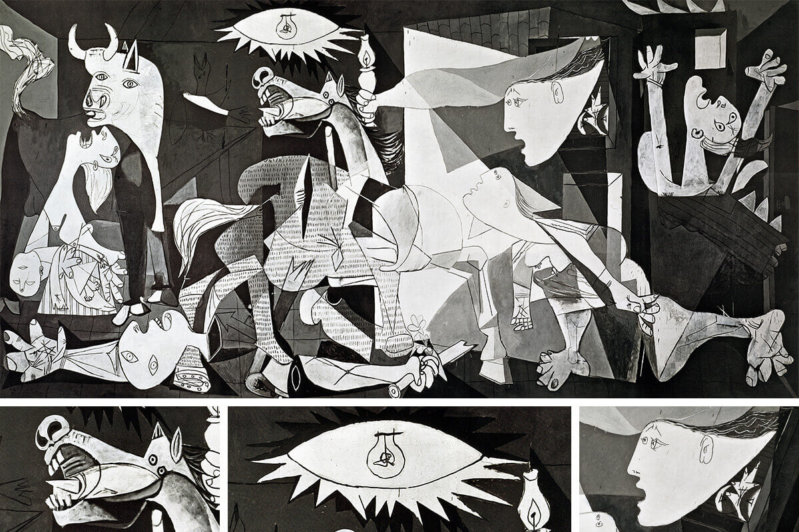

- Guernica, Pablo Picasso tarafından 1937'de yapılan, İspanya İç Savaşı sırasında Nazi Almanyası'na ait 28 bombardıman uçağının 26 Nisan 1937'de İspanya'daki Guernica şehrini bombalamasını anlatan, 7,76 m eninde ve 3,49 m yüksekliğinde anıtsal tablodur. Saldırı sırasında 250 ila 1.600 kişi hayatını kaybetmiş, çok daha fazla sayıda kişi de yaralanmıştı.
- İspanyol hükûmeti, Paris'teki 1937 Dünya Fuarı kapsamındaki Modern Hayatta Sanat ve Teknik sergisinin İspanya'ya ayrılan bölümünde sergilenmek üzere, Pablo Picasso'ya büyük bir duvar resmi sipariş etti. O sırada gerçekleşen hava saldırısından etkilenen Picasso, saldırıdan sonraki 15 gün içinde bu duvar resmini tamamladı. Tablo ufak bir dünya turu kapsamında çeşitli ülkelerde sergilendi ve beğeni topladı. Böylece İspanya'daki iç savaşa diğer ülkelerin ilgisi de çekilmiş oldu. Guernica, savaş trajedilerinin ve savaşın bireyler üzerindeki acı verici etkilerinin bir özetidir. Tablo zaman içinde, savaşın yarattığı trajedilerin anımsatıcısı, savaş karşıtı ve barış yanlısı düşüncelerin sembolü haline gelmiştir.
ANASAYFAYA GERİ DÖN